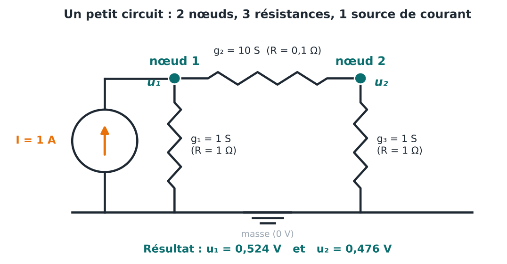
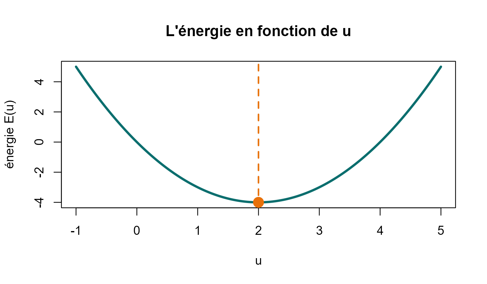
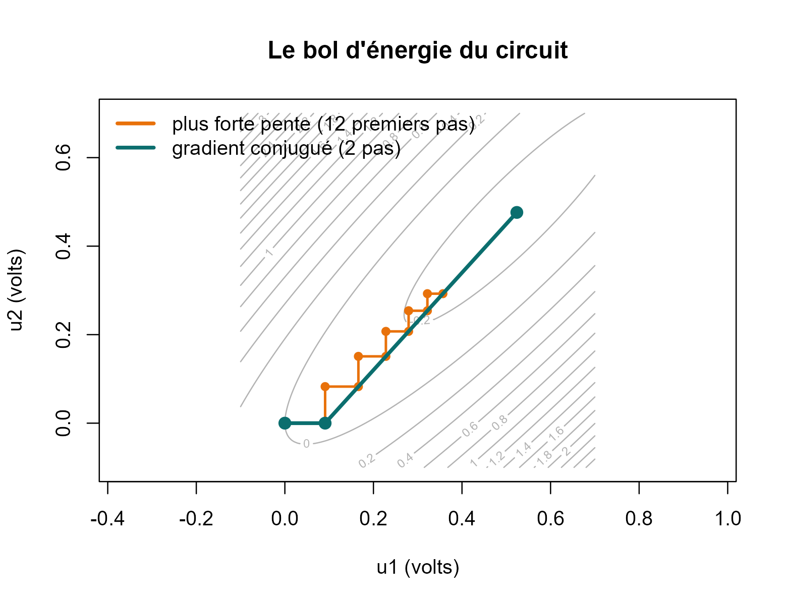
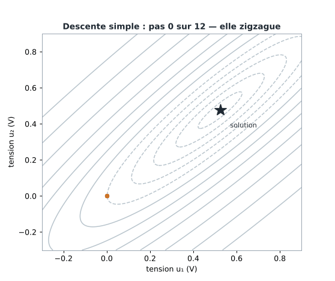

1. Comprendre l'algorithme sur un petit circuit
comprendre.RmdDans cette page, vous allez :
- écrire un problème sous la forme K u = f, à partir d’un petit circuit ;
- comprendre l’idée de « descendre dans un bol » ;
- suivre l’algorithme pas à pas.
1. Le problème : un petit circuit
Prenons le plus petit exemple utile : deux nœuds reliés par des fils. On injecte 1 A au nœud 1. On cherche la tension (en volts) de chaque nœud, par rapport à la masse (0 V).

Chaque fil est décrit par sa conductance : sa facilité à laisser passer le courant (c’est l’inverse de la résistance). Ici : 1 entre le nœud 1 et la masse, 10 entre les deux nœuds, 1 entre le nœud 2 et la masse.
Deux règles de physique
- Pour un fil : le courant qui le traverse est égal à la conductance multipliée par la différence de tension entre ses deux bouts. C’est la loi d’Ohm.
- Pour un nœud : tout le courant qui arrive repart. Un nœud ne garde rien. C’est la loi des nœuds (comme une jonction de tuyaux : l’eau qui entre est égale à l’eau qui sort).
On écrit l’équation de chaque nœud
Au nœud 1. Il arrive 1 A. Il repart par deux fils :
- vers la masse : 1 × (u₁ − 0) = u₁
- vers le nœud 2 : 10 × (u₁ − u₂)
Donc : u₁ + 10 (u₁ − u₂) = 1, ce qui donne 11 u₁ − 10 u₂ = 1.
Au nœud 2. Il n’arrive rien (0 A). Il repart par deux fils :
- vers la masse : 1 × u₂
- vers le nœud 1 : 10 × (u₂ − u₁)
Donc : u₂ + 10 (u₂ − u₁) = 0, ce qui donne −10 u₁ + 11 u₂ = 0.
On range les deux équations en tableau
Chaque ligne du tableau est un nœud. C’est la forme K u = f :
Pourquoi ces nombres ?
- 11 = 1 + 10 : les conductances des deux fils qui touchent le nœud 1 (on additionne).
- −10 : le fil entre les deux nœuds, avec un signe moins parce que u₂ apparaît « de l’autre côté » de l’équation.
- La ligne 2 se lit pareil : 10 + 1 = 11, et −10 pour le fil commun.
La fonction chaine() du package construit ce tableau à
partir des conductances des fils, dans l’ordre :
## [,1] [,2]
## [1,] 11 -10
## [2,] -10 11
f <- c(1, 0) # 1 A injecté au nœud 1, rien au nœud 2La solution, à la main puis par l’ordinateur
À la main : la ligne 2 donne u₁ = 1,1 × u₂. On remplace dans la ligne 1 : 12,1 u₂ − 10 u₂ = 1, donc 2,1 u₂ = 1. Ainsi u₂ = 0,4762 V et u₁ = 0,5238 V.
Avec notre algorithme :
res <- cg(K, f)
res$x # les tensions u1 et u2 (volts)## [1] 0.5238095 0.4761905
res$iterations # le nombre de pas## [1] 2Le résultat est le même, trouvé en 2 pas. Le nœud 1 a la tension la plus élevée parce que le courant entre par là.
2. L’idée : descendre dans un bol
Pour deux inconnues, résoudre à la main est facile. Pour des milliers, il faut une autre approche. L’idée est de transformer l’équation en un problème de descente.
D’abord avec une seule inconnue
Prenons l’équation 2 u = 4 (on voit que u = 2). On construit une fonction appelée énergie :
- Le premier terme (½ k u²) est l’énergie que le système emmagasine quand il est déformé : elle augmente vite quand u s’éloigne de zéro.
- Le second (− f u) est le travail de la force : c’est le gain d’énergie quand la force fait avancer le système.
u <- seq(-1, 5, length.out = 200)
E <- u^2 - 4 * u # 1/2 * 2 * u^2 - 4 * u
plot(u, E, type = "l", lwd = 3, col = "#0B6E6E", xlab = "u", ylab = "énergie E(u)",
main = "L'énergie en fonction de u")
abline(v = 2, lty = 2, col = "#E8710A", lwd = 2)
points(2, -4, pch = 19, cex = 1.8, col = "#E8710A")
La courbe descend, atteint un point le plus bas, puis remonte. Ce point est en u = 2, c’est-à-dire la solution de 2 u = 4. Ce n’est pas un hasard :
- au point le plus bas, la courbe est horizontale : la pente est nulle ;
- la pente de E vaut k u − f (ici 2u − 4) ;
- pente nulle ⇔ k u − f = 0 ⇔ k u = f.
Chercher le point le plus bas, c’est donc résoudre l’équation. Un système physique fait de lui-même ce chemin : il se place au point d’énergie minimale, comme une bille au fond d’une cuvette.
Avec deux inconnues : un bol
Avec u₁ et u₂, la parabole devient un bol à trois dimensions : la position est le couple (u₁, u₂), et la hauteur est l’énergie. La formule est la même, avec des tableaux de nombres à la place des nombres :
Même raisonnement : le fond du bol est l’endroit où la pente est nulle, c’est-à-dire où K u = f.
Pour dessiner un bol sur une feuille, on trace des courbes de niveau, comme sur une carte de randonnée : chaque ligne relie des points de même hauteur. Le fond du bol est au centre des ellipses.
Deux façons de descendre
- La plus forte pente. À chaque pas, on regarde où ça descend le plus vite, et on y va. C’est intuitif, mais dans un bol allongé (une vallée étroite), la plus forte pente pointe vers le flanc de la vallée, pas vers le fond. On traverse la vallée, puis on repart de l’autre côté : on zigzague.
- Le gradient conjugué. À chaque pas, on choisit une direction qui ne défait pas le travail déjà fait.
cg_res <- cg(K, f, garder_points = TRUE)
sd_res <- descente_simple(K, f, garder_points = TRUE)
E2 <- function(a, b) 0.5 * (K[1, 1] * a^2 + 2 * K[1, 2] * a * b + K[2, 2] * b^2) - f[1] * a - f[2] * b
u1 <- seq(-0.1, 0.7, length.out = 120)
u2 <- seq(-0.1, 0.7, length.out = 120)
contour(u1, u2, outer(u1, u2, E2), nlevels = 18, col = "grey70", asp = 1,
xlab = "u1 (volts)", ylab = "u2 (volts)", main = "Le bol d'énergie du circuit")
P <- do.call(rbind, cg_res$points)
Q <- do.call(rbind, sd_res$points[1:12])
lines(Q, type = "o", col = "#E8710A", lwd = 2, pch = 16)
lines(P, type = "o", col = "#0B6E6E", lwd = 3, pch = 19)
legend("topleft", c("plus forte pente (12 premiers pas)", "gradient conjugué (2 pas)"),
col = c("#E8710A", "#0B6E6E"), lwd = 3, bty = "n")
Comment lire ce graphique : les ellipses grises sont les courbes de niveau, le fond du bol est en leur centre. La ligne orange (plus forte pente) rebondit d’un côté à l’autre. La ligne verte (gradient conjugué) arrive au fond en 2 pas.

Comptons les pas jusqu’à la précision demandée :
cg(K, f)$iterations## [1] 2
descente_simple(K, f)$iterations## [1] 1942 pas contre 194, pour seulement deux inconnues.
3. L’algorithme pas à pas
À chaque pas, le gradient conjugué répète quatre idées :
- Mesurer ce qui reste. On calcule la force restante (le résidu) : ce que le système n’a pas encore équilibré. Si elle est nulle, on a la solution.
- Choisir une direction. Au premier pas, c’est la force restante. Ensuite, c’est la force restante corrigée pour ne pas défaire les pas précédents.
- Avancer du bon pas. On avance dans cette direction exactement jusqu’au point le plus bas de la ligne.
- Recommencer jusqu’à ce que la force restante soit très petite.
Sur notre circuit, voici ce qui se passe :
| Pas | Tension u₁ | Tension u₂ | Force restante |
|---|---|---|---|
| Départ | 0 | 0 | 1 |
| 1 | 0,0909 | 0 | 0,909 |
| 2 | 0,5238 | 0,4762 | 0 |
- Pas 1 : on pousse dans la direction de la force restante, qui est entièrement au nœud 1. Seule u₁ bouge. Il reste de la force, maintenant au nœud 2.
- Pas 2 : la nouvelle direction tient compte du premier pas. Elle mène directement au fond du bol : la force restante est nulle.
Pourquoi « conjugué » ? Parce que chaque nouvelle direction est choisie pour ne pas défaire ce que les précédentes ont réglé. Avec 2 inconnues, 2 directions suffisent : l’algorithme termine en 2 pas.